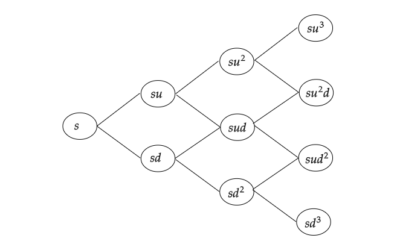

The Binomial Model
One-Period Binomial Model.
We start with the one-period version of the model. In the further sections, we will easily extend the model to an arbitrary number of periods.
Model description.
Running time is denoted by the letter $t$, and by definition we have two points in time $t = 0$ (“today”) and $t=1$ (“tomorrow”). In the model, we have two assets: a bond and a stock. At time $t$, the price of the bond is denoted by $B_t$ and the price of one share of the stock is denote by $S_t$. Thus, we have two price processes $B$ and $S$. The bond price process is deterministic and given by
\begin{align*}
B_0 &= 1,\\
B_1 &= 1+r
\end{align*}
The constant $r$ is the spot rate for the period, and we can also interpret the existence of the bond as the existence of a bank account with $r$ as its rate of interest.
The stock price process is a stochastic process, and its dynamical behavior is described as follows:
\begin{align*}
S_0 &= s,\\
S_1 &= \begin{cases}
s \cdot u, \quad \text{ with probability } p_u \\
s \cdot d, \quad \text{ with probability } p_d
\end{cases}
\end{align*}
It is often convenient to write this as
\begin{align*}
S_0 &= s \\
S_1 &= s\cdot Z
\end{align*}
where $Z$ is a stochastic variable defined as:
\begin{align*}
Z = \begin{cases}
u, \quad \text{ with probability } p_u \\
d, \quad \text{ with probability } p_d
\end{cases}
\end{align*}
We assume that today’s stock price $s$ is known, as are the positive constants $u$, $d$, $p_u$ and $p_d$. We assume that $d < u$ and we of course have $p_u + p_d = 1$.
Portfolios and arbitrage.
We will study the behavior of various portfolios on the $(B,S)$ market and to this end we define a portfolio as a vector $\mathbf{h} = (x,y)$ in $\mathbf{R}^2$. The interpretation is that $x$ is the number of bonds we hold in our portfolio, whereas $y$ in the number of units of the stock held by us. Note that, it is quite acceptable for $x$ and $y$ to be positive as well as negative. If, for example, $x=3$, this means that we have bought $3$ bonds at time $t=0$. If on the other hand $y=-2$, this means that we have sold two shares of the stock at time $t=0$. In financial jargon, we have a long position in the bond and a short position in the stock. It is an important assumption of the model, that short positions are allowed.
Assumptions. We assume the following institutional facts:
- Short positions as well as fractional holdings are allowed. In mathematical terms, this means that every $\mathbf{h}\in\mathbf{R}^2$ is an allowed portfolio.
- There is no bid-ask spread. That is, the selling price is equal to the buying price.
- There are no transactions costs of trading.
- The market is completely liquid i.e. it is always possible to buy and/or sell unlimited quantities on the market. In particular, it is possible to borrow unlimited amounts from the bank (by selling bonds short).
Consider now a fixed portfolio $\mathbf{h} =(x,y)$. This portfolio has a deterministic market value at $t=0$ and a stochastic value at $t=1$.
Definition (Value process $V_t^h$). The value process of the portfolio $h$ is defined by
$$
\begin{align*}
V_t^h = xB_t + yS_t, \quad t=0,1
\end{align*}
$$
or in more detail,
$$
\begin{align*}
V_0^h &= x + ys \\
V_1^h &= x(1+r) + ysZ
\end{align*}
$$
Everyone wants to make a profit by trading on the market, and in this context a so-called arbitrage-portfolio is a dream come true, this is one of the central concepts of the theory.
Defintion. (Arbitrage Portfolio) An arbitrage portfolio is a portfolio $h$ with the properties,
$$
\begin{align*}
V_0^h &= 0,\\
V_1^h &> 0, \text{ with probability }1
\end{align*}
$$
An arbitrage portfolio is a deterministic money-making machine, and we interpret the existence of an arbitrage portfolio as equivalent to a serious case of mispricing on the market. It is now natural to investigate when a given market model is arbitrage free i.e. when there are no arbitrage opportunities.
Proposition. The binomial model is arbitrage-free if and only if the following conditions hold:
$$
\begin{align*}
d \leq (1 + r) \leq u \tag{1}
\end{align*}
$$
Proof. The above condition has an easy economic interpretation. It simply says that the return on the stock is not allowed to dominate the bank account and vice versa. To show that, absence of arbitrage implies equation (1), we assume that (1) does in fact not hold, and then we show that this implies an arbitrage opportunity. Let us assume that the inequalities in (1) does not hold, so that we have the inequality $s(1+r)>su$. Then, we also have $s(1+r)>sd$, so it always more profitable to invest in the bank account than in the stock. An arbitrage strategy can now be formed by the portfolio $h=(s,-1)$. For this portfolio, we therefore have, $V_0^h = s + (-1)(s) = 0$, and as for $t=1$, we have :
$$
\begin{align*}
V_1^h = s(1+r) - sZ
\end{align*}
$$
which by the assumption is positive.
Now assume that (3) is satisfied. To show that this implies absence of arbitrage, let us consider an arbitrary portfolio such that $V_0^h = 0$. We thus have $x + yS_0 = 0$ i.e. $x = -yS_0$. Using this relation, we can write the value of the portfolio at $t=1$ as
$$
\begin{align*}
V_1^h &= \begin{cases}
-ys(1+r) + ysu & \text{ if }Z = u\\
-ys(1+r) + ysd & \text{ if } Z = d\\
\end{cases}
\end{align*}
$$
That is,
$$
\begin{align*}
V_1^h &= \begin{cases}
ys(u-(1+r)) & \text{ if }Z = u\\
ys((d-1+r)) & \text{ if } Z = d\\
\end{cases}
\end{align*}
$$
Assume now that $y>0$. Then, $h$ is an arbitrage strategy, if and only, if we have the inequalities:
$$
\begin{align*}
u &> (1+r)\\
d &> (1+r)
\end{align*}
$$
but this is impossible because of condition (3). The case $y < 0$ is treated similarly. This closes the proof.
At first glance, this result is perhaps only moderately exciting, but we may write it in a more suggestive form. To say that (3) holds is equivalent to saying that, geometrically, the point $(1+r)$ lies between the points $u$ and $d$ on the real line, and therefore it is a convex combination of $u$ and $d$. By the section formula,
$$
\begin{align*}
1+r = q_u \cdot u + q_d \cdot d
\end{align*}
$$
where $q_u,q_d \geq 0$ are some fractions and $q_u + q_d = 1$. The point $(1+r)$ divides the line joining the points $u$ and $d$, into the ratio $q_d:q_u$. In particular, we see that these weights $q_u$ and $q_d$ can be interpreted as probabilities for a new probability measure $Q$ with the property that $Q(Z=u)=q_u$ and $Q(Z=d) = q_d$. Denoting the expectation w.r.t this measure by $E^Q$, we have the following easy calculation:
$$
\begin{align*}
\frac{1}{1+r}E^Q[S_1] = \frac{1}{1+r}[q_u s \cdot u + q_d s \cdot d] = \frac{1}{1+r} \cdot s(1+r) = s
\end{align*}
$$
We thus have the relation
$$
\begin{align*}
s = \frac{1}{1+r}E^Q[S_1]
\end{align*}
$$
This is called the risk-neutral pricing formula, in the sense that, it gives today’s stock price as the discounted expected value of tomorrow’s stock price. Of course, we do not assume that the agents in our market are risk-neutral - what we have shown is only that if we use $Q$-probabilities then we in fact have a risk-neutral valuation of the stock(given absence of arbitrage). A probability measure is called a risk-neutral measure, or alternatively a risk adjusted measure or a martingale measure.
Definition (Martingale Measure). A probability measure $Q$ is called a martingale measure if the following condition holds:
$$
\begin{align*}
s = \frac{1}{1+r}E^Q[S_1]
\end{align*}
$$
Proposition (Equivalence of No-arbitrage and existence of Martingale measure). The market model is arbitrage free if and only if there exists a martingale measure $Q$.
Proof.
The binomial model is arbitrage free, if
$$
\begin{align*}
d \leq (1+r) \leq u
\end{align*}
$$
Let $(1+r) = q_u u + q_d d$. Then, by the section formula,
$$
\begin{align*}
q_u &= \frac{(1+r)-d}{u-d}\\
q_d &= \frac{u - (1+r)}{u-d}
\end{align*}
$$
Clearly, $0 < q_u < 1$, $0 < q_d < 1$ and $q_u + q_d = 1$. Moreover, they satisfy the equation $q_u \cdot u + q_d \cdot d = (1+r)$. So, the discounted expectation of tomorrow’s stock price under the $Q$-measure is today’s stock price. Thus, there exists a martingale measure $Q$. This closes the proof.
Proposition (Martingale probabilities in the Binomial Model).
For the binomial model above, the martingale probabilities are:
$$
\begin{align*}
q_u &= \frac{(1+r)-d}{u - d}\\
q_d &= \frac{u-(1+r)}{u - d}
\end{align*}
$$
Definition (Contingent claim). A contingent claim(financial derivative) is any stochastic variable $X$ of the form $X = \Phi(Z)$, where $Z$ is the stochastic variable driving the stock price process above.
The function $\Phi$ is called the contract function. A typical example would be a European call option on the stock with strike price $K$. For this option to be interesting we assume that $s d < K < s u$. If $S_1 > K$, then we use the option, pay $K$ to get the stock and then sell the stock on the market for $S_0 u$, thus making a net profit of $s u - K$. If $S_1 < K$, then the option is obviously worthless. In this example, we thus have:
$$
\begin{align*}
X = \begin{cases}
su - K, \quad &\text{ if } Z=u,\\
0, \quad & \text{ if } Z = d
\end{cases}
\end{align*}
$$
and the contract function is given by
$$
\begin{align*}
\Phi(u) &= su - K,\\
\Phi(d) &= 0
\end{align*}
$$
Our main problem is now to determine the fair price of this financial derivative at time $0$, if such an object exists at all, for a given contingent claim $X$.
If we denote the price of $X$ at time $t$ by $\Pi_t[X]$, then it can be seen that at time $t=1$, the problem is easy to solve. In order to avoid arbitrage, we must have
$$
\begin{align*}
\Pi_1[X] = X
\end{align*}
$$
If $\Pi_1[X] > X$, we borrow options worth $X$ and sell them for $\Pi_1[X]$. We realize a gain $\Pi_1[X] - X$, after returning $X$ dollars to the lenders, without any net investment of money at time zero. If $\Pi_1[X]<X$, we buy the options for a price of $\Pi_1[X]$ and exercise them for a payoff of $X$.
The hard part of the problem is to determine $\Pi_0[X]$. To attack this problem we make a slight detour.
Since, we have assumed absence of arbitrage we know that we cannot make money out of nothing, but it is interesting to study what we can achieve on the market.
Definition. A given contingent claim can be replicated, or is said to be reachable if there exists a portfolio $h$ such that
$$V_1^h = X$$
with probability $1$. In that case, we say that the portfolio $h$ is a replicating portfolio or a hedging portfolio. If all financial derivative contracts (contingent claims) can be replicated then we say that the market is complete.
If a certain claim $X$ is reachable with the replicating portfolio $h$, then from a financial point of view, there is no difference between holding the derivative contract $X$ and holding the replicating portfolio $h$. No matter what happens on the stock market, the value of the claim at time $t = 1$ will be exactly equal to the value of the portfolio at $t = 1$. Thus, the price of the claim should equal the market value of the portfolio at time zero and we have the following basic pricing principle.
Pricing principle 1. If a claim $X$ is reachable with the replicating portfolio $h$, then the only reasonable price process for $X$ is given by
$$\Pi_t[X] = V_t^h, \quad t = 0,1$$
The word reasonable above can be given a more precise meaning as in the following proposition. We leave the proof to the reader.
Proposition. Suppose that a claim $X$ is reachable with the replicating portfolio $h$. Then, any price of the claim $X$ other than $V_0^h$, will lead to an arbitrage possibility.
Proof.
We are given that the claim $X$ is reachable with the replicating portfolio $h$. This means that, at time one, the replicating portfolio behaves like the claim, $V_1^h = X$.
Suppose that the price of the claim $X$ at time zero, is greater than $V_0^h$, let’s call it, $\hat{V_0^h}$. Let us construct a portfolio $\mathbf{p}=(X,h,B)$ consisting of the claim $X$, the replicating portfolio $h$ and bonds $B$. Let $\mathbf{p}=(-1,1,\hat{V_0^h}-V_0^h)$. That is, we borrow the claim $X$ and short-sell it to realize $\hat{V_0^h}$ dollars, buy the replicating portfolio $h$ for $V_0^h$ dollars, and invest the remaining proceeds $\hat{V_0^h} - V_0^h$ in a bond. The value of our portfolio $p$ is given by:
\begin{align*}
V_0^p &= x\cdot \hat{V_0^h} + y\cdot V_0^h + z\\
V_1^p &= x \cdot X + y \cdot X + z(1+r)
\end{align*}
If $p = (-1,1,\hat{V_0^h} - V_0^h)$, we have:
\begin{align*}
V_0^p &= -\hat{V_0^h} + V_0^h + (\hat{V_0^h} - V_0^h) &&= 0 \\
V_1^p &= - X + X + (\hat{V_0^h} - V_0^h)(1+r) &&= (\hat{V_0^h} - V_0^h)(1+r)
\end{align*}
This is an arbitrage portfolio.
If the price of the claim $X$ at time zero, is less than $V_0^h$, we can reverse the trading strategy. We construct the portfolio $\mathbf{p}=(1,-1,(V_0^h - \hat{V_0^h}))$. We short sell the replicating portfolio to raise $V_0^h$ dollars and buy the claim worth $\hat{V_0^h} < V_0^h$ and invest the excess $(V_0^h - \hat{V_0^h})$ in bonds. We have:
\begin{align*}
V_0^p &= \hat{V_0^h} - V_0^h + (V_0^h - \hat{V_0^h}) &&= 0 \\
V_1^p &= X - X + (V_0^h - \hat{V_0^h})(1+r) &&= (V_0^h - \hat{V_0^h})(1+r)
\end{align*}
This is an arbitrage portfolio.
Consequently, the price of the claim $X$ must equal $V_0^h$ at time zero, if there is to be no arbitrage. This closes the proof.
We see that, in a complete market we can in fact price all contingent claims, so it is of great interest to investigate when a market is complete. For the binomial model, we have the following result.
Proposition. Assume that the general binomial model is free of arbitrage. Then it is also complete.
Proof.
We fix an arbitrary claim $X$ with the contract function $\Phi$ and we want to show that there exists a portfolio $h=(x,y)$ such that
\begin{align*}
V_1^h = \Phi(u), & \quad \text{ if } Z = u,\\
V_1^h = \Phi(d), & \quad \text{ if } Z = d,
\end{align*}
If we write this out in detail, we want to find a solution $(x,y)$ to the following system of equations:
\begin{align*}
(1 + r)x + suy &= \Phi(u)\\
(1 + r)x + sdy &= \Phi(d)
\end{align*}
Since by assumption, $d < u$, this linear system has a unique solution, and a simple calculation shows that:
\begin{align*}
x &= \frac{1}{1+r}\cdot\frac{u \Phi(d) - d \Phi(u)}{u - d} \tag{2}\\
y &= \frac{1}{s}\cdot\frac{\Phi(u) - \Phi(d)}{u - d} \tag{3}
\end{align*}
Risk-neutral Valuation.
Since the binomial market model is now shown to be complete we can now price any contingent claim. According to the pricing principle of the preceding section, the price at time $t = 0$ is given by,
\begin{align*}
\Pi_0[X] = V_0^h
\end{align*}
and using the explicit formulas (2) and (3), we obtain after some reshuffling of the terms:
\begin{align*}
\Pi_0[X] &= x + ys\\
&= \frac{1}{1+r}\cdot\frac{u \Phi(d) - d \Phi(u)}{u - d} + \frac{\Phi(u) - \Phi(d)}{u - d} \\
&= \frac{1}{1+r}\cdot\frac{u \Phi(d) - d \Phi(u)}{u - d} + \frac{1}{1+r}\cdot \frac{(1+r)\Phi(u) - (1+r)\Phi(d)}{u - d}\\
&= \frac{1}{1+r}\left[\frac{(1+r)- d}{u-d}\cdot\Phi(u) + \frac{u - (1+r)}{u - d}\cdot\Phi(d)\right]
\end{align*}
Here, we recognize the martingale probabilities $q_u$ and $q_d$ of the binomial market model. If we assume that the model is free of arbitrage, these are the true probabilities, so we can write the pricing formula above as :
\begin{align*}
\Pi_0[X] &= \frac{1}{1+r} \{ q_u \cdot\Phi(u) + q_d \cdot \Phi(d) \} \\
&= \frac{1}{1+r}E^Q[X]
\end{align*}
The right hand side can now be interpreted as an expected value under the martingale probability measure $Q$, so we have proved the following basic pricing result, where we also add our old results about heding.
Proposition. If the binomial market model is free of arbitrage, then the arbitrage free price of a contingent claim $X$ is given by:
$$\Pi_0[X] = \frac{1}{1+r}E^{Q}[X]\tag{4}$$
Here the martingale measure is uniquely determined by the relation
$$S_0 = \frac{1}{1+r}E^Q[S_1] \tag{5}$$
and the explicit expressions for $q_u$ and $q_d$ are given by:
$$q_u = \frac{(1+r) - d}{u - d},\quad q_d = \frac{u - (1+r)}{u - d}$$
Furthermore the claim can be replicated using the portfolio:
\begin{align*}
x &= \frac{1}{1+r}\cdot\frac{u\Phi(d)-d\Phi(u)}{u - d}\tag{6}\\
y &= \frac{1}{s}\cdot \frac{\Phi(u) - \Phi(d)}{u - d}
\end{align*}
We see that the formula (4) is a risk-neutral valuation formula and the probabilities which are used are just those for which the stock itself admits a risk-neutral valuation. The main economic moral can now be summarized.
Moral.
- The only role played by the objective probabilities is that they determine which events are possible and which events are impossible.
- When we compute the arbitrage free price of a financial derivative contract we carry out the computation as if we live in a risk-free world.
- This does not mean that we de facto live ( or believe that we live ) in a risk-neutral world.
- The valuation formula holds for all investors regardless of their attitude towards risk, as long as they prefer more deterministic money to less.
- The formula above is therefore often referred to as a preference free valuation formula.
We end by studying a concrete example.
Example. We set $s = 100$, $u = 1.2$, $d = 0.8$, $p_u = 0.6$, $p_d = 0.4$ and for computational simplicity, $r=0$. We have the price dynamics:
\begin{align*}
S_0 &= 100, \\
S_1 &= \begin{cases}
120, & \quad \text{ with probability } 0.6\\
80, & \quad \text{ with probability } 0.4
\end{cases}
\end{align*}
If we compute the discounted expected value (under the objective probability measure $P$) of tomorrow’s price, we get
\begin{align*}
\frac{1}{1+r}E^P[S_1] = 1[120 \cdot 0.6 + 80 \cdot 0.4] = 104
\end{align*}
This is higher than the value of today’s stock price of $100$, so the market is risk-averse. Since condition (1) is obviously satisfied, we know that the market is arbitrage-free. We consider a European call option with strike $K=110$, so the claim $X$ is given by
$$X = \begin{cases}
10,& \quad \text{ if } S_1 = 120\\
0, & \quad \text{ if } S_1 = 80
\end{cases}$$
Using the method of computing the price as discounted expected values under the objective probabilities, this would give the price as:
$$\Pi_0[X] = \frac{1}{1+0}[0.6 \cdot 10 + 0.4 \cdot 0] = 6$$
Using the theory above it is easily seen that the martingale probabilities are given by:
$$q_u = \frac{(1+r)-d}{u - d} = \frac{1-0.8}{1.2-0.8}=0.5, \quad q_d = 1 - q_u = 0.5$$
thus giving us the theoretical price
$$\Pi_0[X]=\frac{1}{1+0}[0.5 \cdot 10 + 0.5 \cdot 0] = 5$$
We thus see that the theoretical price differs from the naive approach above. If our theory is correct, we should be able to replicate the option, and from the proposition above the replicating portfolio is given by :
\begin{align*}
x &= \frac{(1.20)(0)-(0.8)(10)}{1.2 - 0.8} = \frac{-8}{0.4} = -20 \\
y &= \frac{1}{100} \cdot \frac{10 - 0}{1.2 - 0.8} = 0.25
\end{align*}
In everyday terms, this means that the replicating portfolio is formed by borrowing $20$ dollars from the bank account, and investing this money in a quarter of a share of the stock. Thus, the net value of the portfolio at $t=0$ is $-20 + (0.25)(100)=5$. And at time $t=1$, the value is given by:
\begin{align*}
V_1^h &= -20 + (0.25)120 = 10, & \quad \text{ if } S_1 = 120 \\
V_1^h &= -20 + (0.25)80 = 0, & \quad \text{ if } S_1 = 80
\end{align*}
so we see, that we have indeed replicated the option. We also see that if anyone is foolish enough to buy the option for $6$ dollars, then we can make a risk-less profit. We short-sell the option for six dollars. Out of these six, we invest $5$ in the replicating portfolio and the remaining one in the bank. At time $t=1$, the claims of the buyer are completely balanced by the replicating portfolio, and we still have one dollar invested in the bank. We have thus, made an arbitrage profit. If someone is willing to sell the option to us at a price lower than five dollars, then we can still make an arbitrage profit by selling the portfolio short.
We end this section by making few remarks.
First of all we have seen that in a complete market, like the binomial model above, there is indeed a unique price for any contingent claim. This price is given by the value of the replicating portfolio, and a negative way of expressing this is as follows. There exists a theoretical price for the claim precisely because of the fact, that strictly speaking, the claim is superfluous - it can well be replaced by its hedging portfolio.
Secondly, we see that the structural reason for the completeness of the binomial market model is the fact that we have two financial instruments at our disposal (the bond and the stock) in order to solve the two equations (one for each possible outcome in the sample space). This fact can be generalized. A model is complete (in the generic case) if the number of underlying assets (including the bank account) equals the number of outcomes in the sample space.
If we would like to make a more realistic multiperiod model of the stock market, then the last remark above seems discouraging. If we make a (non-recombining) tree with $20$ time steps this means that we have $2^{20} \approx 10^6$ elementary outcomes, and this number far exceeds by a large margin the number of assets on the existing stock market. It would therefore seem that it is impossible to construct an interesting complete model with a reasonably large number of time steps. Fortunately, the situation is not at all as bad as that; in a multiperiod model we will also have the possibility of considering intermediary trading i.e. we can allow for portfolios which are rebalanced over time. This will give us many more degrees of freedom.
The Multiperiod Model.
Portfolios and arbitrage.
The multiperiod binomial model is a discrete time model with the time index $t$ running from $t=0$ to $t=T$, where the horizon $T$ is fixed. As before we have two underlying assets, a bond with a price process $B_t$ and a stock with a price process $S_t$.
We assume a constant deterministic short rate of interest $r$m which is interpreted as the simple period rate. This means that the bond price dynamics are given by:
\begin{align*}
B_{n+1} &= (1+r)B_n\\
B_0 &= 1
\end{align*}
The dynamics of the stock price are given by:
\begin{align*}
S_{n+1} &= S_n \cdot Z_n\\
S_0 &= S
\end{align*}
where $Z_0,\ldots,Z_{T-1}$ are assumed to i.i.d. (independent and identically distributed) stochastic variables, taking only the two values $u$ and $d$ with probabilities
\begin{align*}
P(Z_n = u) &= p_u\\
P(Z_n = d) &= p_d
\end{align*}
We can illustrate the stock dynamics by means of a tree as shown in the figure below. Note that the tree is recombining in the sense that an up-move followed by a down-move gives us the same result as a down-move followed by an up-move. We now go on to define the concept of a dynamic portfolio strategy.

Definition. A portfolio strategy is a stochastic process
$$ \{h_t = (x_t,y_t): t=1,\ldots,T \}$$
such that $h_t$ is a function of $S_0,S_1,\ldots,S_{t-1}$. For a given portfolio strategy $h$, we set $h_0 = h_1$ by convention. The value process corresponding to the portfolio $h$ is defined by
$$V_t^h = x_t(1+r) + y_tS_t$$
The interpretation of the formal definition is that $x_t$ is the amount of money which we invest in the bank account at time $t-1$ and keep until time $t$. We interpret $y_t$ as the number of shares that we buy at time $t-1$ and keep until time $t$. We allow the portfolio strategy to be a contingent strategy i.e. the portfolio we buy at time $t$ is allowed to depend on all the information we have collected by observing the evolution of the stock price upto time $t$. We are however not allowed to look into the future. The entity $V_t^h$ above is of course the market value of the portfolio $(x_t,y_t)$ (which has been held since $t-1$) at time $t$.
The portfolios which primarily interest us are self-financing portfolios, i.e. portfolioss without exogenous infusion or withdrawal of money. In practical terms, this means that in a self-financing portfolio strategy the accession of a new asset has to be financed through the sale of some other asset. The mathematical definition is as follows:
Definition. A portfolio strategy $h$ is said to be self-financing if the following condition holds for all $t=0,\ldots,T-1$:
$$x_t(1+r) + y_t S_t = x_{t+1} + y_{t+1}S_t$$
The condition above is simply a budget equation. It says that, at each time $t$, the market value of the old portfolio $(x_t,y_t)$ (which was created at time $t-1$) equals the purchase of the new portolio $(x_{t+1},y_{t+1})$, which is formed at $t$ (and held until $t+1$).
We can now define the multiperiod version of an arbitrage possibility.
Definition. An arbitrage possibility is a self-financing portfolio $h$ with the properties